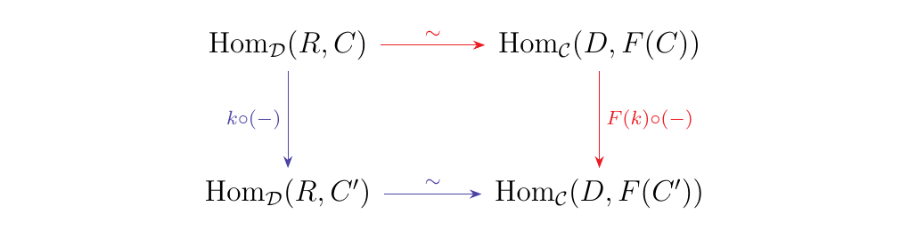
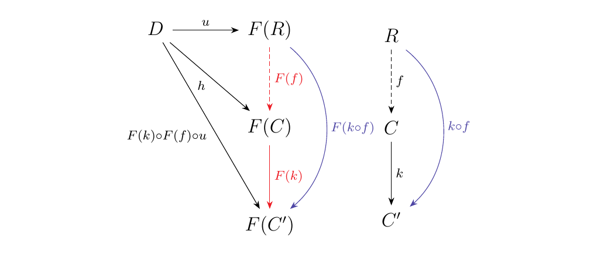
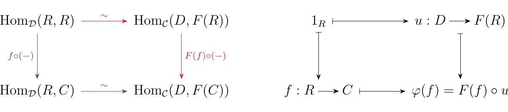
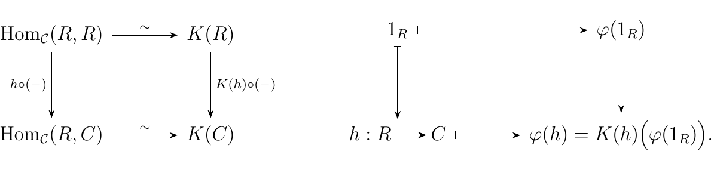
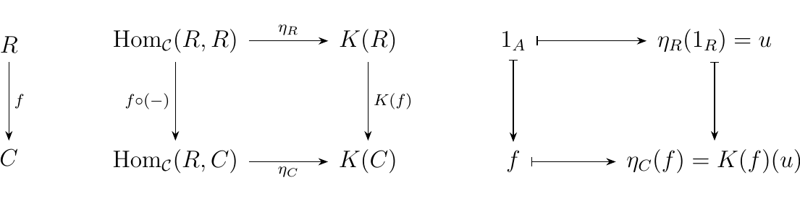
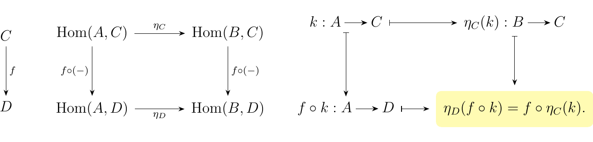
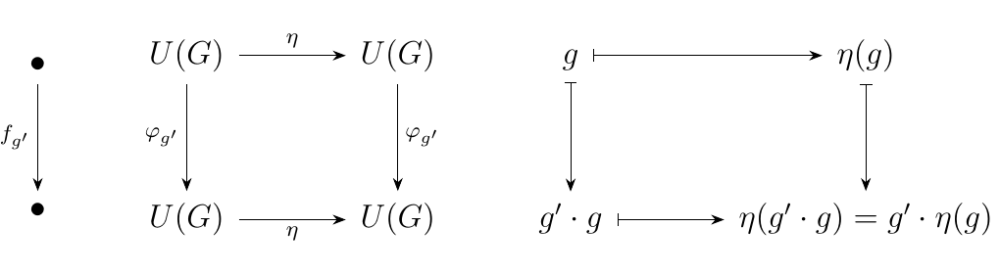

3.2. Representable Functors and Yoneda's Lemma
This is probably the most important section out of these entire set of notes. The propositions proved here will allows us to perform slick proofs of interesting results later on. We will also use results that are left as exercises for the reader (since it is important for the reader to do them). Now before we introduce the Yoneda lemma, we prove some propositions concerning the concept of universality.
Let \(F: \cc \to \dd\) be a functor. Then a pair \((R, u: D \to F(R))\) is universal from \universalDToF{\(D\) to \(F\)} if and only if for each \(C \in \cc\) we have the natural bijection
That is, any isomorphism, natural in \(C\) as above, is determined by a unique morphism \(u: D \to F(R)\) so that \((R, u)\) is a universal arrow from \(D\) to \(F\).
Suppose that \(u: D \to F(R)\) is a universal morphism from \(D\) to \(F\). Then by definition, we have the relation
Each \(h: D \to F(C)\) uniquely corresponds to a morphism \(f: R \to C\), while conversely, any \(f: R \to C\) can be precomposed with \(u\) to obtain a morphism \(F(f) \circ u : D \to F(C)\). Hence we see the we have a bijective correspondence
Now to demonstrate naturality, we consider a morphism \(k: C \to C'\) and we check that the diagram below commutes.

\begin{minipage}{0.5\textwidth} \hspace{-1cm}
 \end{minipage} \hspace{-0.4cm} \begin{minipage}{0.5\textwidth}
- \textcolor{Red}{\textbullet} Beginning with a morphism \(f: R \to C\), we travel right to obtain the morphism \(F(f) \circ u\). Going down, we obtain the morphism \(F(k) \circ (F(f) \circ u)\).
- \textcolor{Blue!80}{\textbullet} Consider the same morphism \(f: R \to C\). If we instead first traveled down, we'd obtain the morphism \(k \circ f\). Traveling right would then send us to the morphism \(F(k \circ f) \circ u\).
\end{minipage} However, it is certainly the case that
so that these paths are equivalent. The proof could also be given immediately by considering the diagram on the left, which is supplied here to give a better understanding of what's going on.
To prove the other direction, suppose that we have such a natural bijection given by some \(\phi\).
Then in particular we have that \(\hom_{\dd}(R, R) \cong \hom_{\cc}(D, F(R))\). Consider \(\phi(1_R): D \to F(R)\); we denote this special morphism as \(u: D \to F(R)\).
Now for any \(f: R \to C\), the diagram on the bottom left commutes by naturality; however, we are more interested in following the element \(1_R \in \hom_{\dd}(R, R)\).
 We see that any such \(\phi\) must act on \(\hom_{\dd}(R, C)\) by bijectively send \(f: R \to C\) to \(F(f) \circ u\). What this means is that any \(h \in \hom_{\cc}(D, F(C))\) corresponds uniquely to some \(f: R \to C\) such that \(h = F(f) \circ u\), which is exactly the definition for \(u: D \to F(R)\) to be universal from \(D\) to \(F\). This completes the proof.
In the proof we demonstrated above, we did something weird. That is, we discussed this so-called natural isomorphism
However, at this point we've only really seen natural isomorphisms between functors. Does this mean what we really had was a natural transformation between two functors? The answer is yes; the proof inadvertently derived the natural isomorphism
which, by the proposition above, exists only when we have a universal morphism \(u: D \to F(R)\) from \(D\) to \(F\). For such functors, we call them representable.
Let \(\cc\) have small hom-sets. We say a functor \(K: \cc \to **Set**\) is representable when there exists an object \(R\) and a natural isomorphism
The object \(R\) here is said to be the representing object for \(K\).
Consider the forgetful functor \(U: **Grp** \to **Set**\). One way to describe this functor is simply with words: each group \(G\) is sent to its underlying set in Set. Another approach is to literally express the groups in terms of its elements, for this then tells us where it is sent in Set. A simple way to do this is to consider the maps
This works since each such map \(\phi: \zz \to G\) firstly picks out some element \(a\) so that \(\phi(1) = a\). As this is a group homomorphism we then see that \(\phi(n) = a^n\). Hence the collection of all these maps picks out all of the elements of \(G\), so that we can say
We use an isomorphism since an equality is not exactly correct; we just know that the two sets are going to have the same cardinality, and hence be isomorphic in Set. Now, what this in the end means is that the forgetful functor is a representable, since we have that
This construction works due to the key property of the group homomorphism, so that this can be repeated for Ring, \(R\)-Mod, etc. Hence many forgetful functors are representable functors. We will see in Chapter 5 what this really means.
Let \((R, +, \cdot)\) be a ring and \((k, +, \cdot)\) a field. Suppose further that \(R\) is \(k\)-algebra. Recall that we can create the affine \(n\)-space of \(R\)
Now suppose \(\phi: R \to S\) is a morphism of \(k\)-algebras. Then this induces a mapping
What we can realize now is that we have a functor on our hands (by of course verifying the other necessary properties) between \(**Alg**_k\) and Set.
Now recall from Example 2.\ref{example_free_algebra_universal} that if \(F: **Set** \to **Alg**_k\) is the free functor assigning \(X \mapsto k\{X\}\), the free algebra, and \(U: **Alg**_k \to **Set**\) is the forgetful functor, then for each set \(X\) we have a universal morphism \((F(X), i: X \to U(F(X)))\) from \(X\) to the forgetful functor \(U\). By Proposition \ref{prop_universality_bijection}, we thus have the isomorphism
natural for all \(R \in **Alg**_k\). However, notice that if \(X = \{x_1, \dots, x_n\}\), \(\hom_{**Set**}(X, U(R))\) is nothing more than the set of all functions which pick out \(n\) elements of \(R\). In other words,
One can verify the naturality of the above bijection (I won't it's not too bad). Therefore we have that
so that we have a natural isomorphism between functors
What this then means is that \(A^n(-)\) is a representable functor.
Let \(X\) be a topological space. Recall from Example ?? that we can consider the set \(\text{Path}(X)\) consisting of all paths in the topological space \(X\). If we recall that a path in \(X\) can be represented by a continuous function \(f: [0,1] \to X\), we see that
Hence we see that \(\text{Path}: **Top** \to **Set**\) is a functor; moreover, it is clearly representable since \(\text{Path}(-) = \hom_{**Top**}([0,1], -)\).
This example, however, can be taken even further: What about \(n\)-dimensional "paths?" To generalize this we can use simplicies. Denote \(\Delta^n\) as the \(n\)-simplex. Then we can establish the family of functors
which map simplicies to topological spaces; such continuous functions provide the foundation for singularly homology theory, and each functor above is representable . Note that we get back \(\text{Path}\) when \(n = 1\).
As we have just seen, representable functors not only occur very frequently but they also arise naturally to yield consturctions which we actually care about.
A natural question to ask at this point is the following: When exactly do we have a representable functor on our hands? The next proposition answers that question.
Let \(\cc\) be a locally small category, and suppose \(K: \cc \to **Set**\) is a functor. Then \(K\) is a representable functor (with representing object \(R\)) if and only if \((R, u: \{\bullet\} \to K(R))\) is universal from \universalDToF{\(\{\bullet\}\) to \(K\)} \ for some object \(R \in \cc\).
Note here that \(\{\bullet\}\) is the one-point set whose single element is denoted as \(\bullet\).
The forward direction is similar to Example \ref{example_affine_representable}, while the backwards direction is similar to the proof of Proposition \ref{prop_universality_bijection}.
First let's interpret what it means for \(u: \{\bullet\} \to K(R)\) to be universal. This means that for any other \(f: \{\bullet\} \to K(C')\), there exists a unique morphism \(h: R \to C'\) such that the diagram below commutes.
By Proposition \ref{prop_universality_bijection} we also have the natural bijection
which is enough to establish a natural isomorphism \(\phi: \hom_{\cc}(R, -) \cong \hom_{**Set**}(\{\bullet\}, K(-))\).
Now observe that for a given \(C'\), each \(f \in \hom_{**Set**}(\{\bullet\}, K(-))\) is just a function \(f: \{\bullet\} \to K(R)\). Thus, each function can be represented uniquely by an element \(c \in K(C)\), which establishes the bijection
for each \(C\). In fact, it's not difficult to show that
this bijection is natural.
Therefore we see that we can connect our natural
bijections together
which demonstrates that \(K: \cc \to **Set**\) is a representable functor.
Conversely, suppose that \(K: \cc \to **Set**\) is representable. Specifically, suppose \(\phi: \hom_{\cc}(R, -) \isomarrow K(-)\) is our natural isomorphism between the functors. Then in particular, for any \(h: R \to C\), naturality guarantees that the following diagram commutes.
 Now take a step back; define the morphism \(u: \{\bullet\} \to K(R)\) where \(u(\bullet) = \phi(1_R)\), and suppose \(f: \{\bullet\} \to K(C)\) is some morphism. Then because \(\phi: \hom_{\cc}(R, C) \to K(C)\) is a bijection, this means that \(f(\bullet) = \phi(h: R \to C)\) for some unique morphism \(h: R \to C\). In particular, the above diagram tells us that
In other words, we have that given any \(f:\{\bullet\} \to K(C)\), there exists a unique \(h: R \to C\) such that the diagram commutes.
Therefore, the fact that \(K\) is representable gives rise to a \(u: \{\bullet\} \to K(R)\) which is universal, which is what we set out to show.
We are now ready to introduce the well-known lemma due to Nobuo Yoneda. The Yoneda lemma is simply a convenient result that occurs when one encounters situations with the functors \(\hom_{\cc}(R, -): \cc \to **Set**\). While this might not seem that relevant, it applicability expands when we combine the result with our previous work on representable functors in this section.
[ (Yoneda "Lemma")] Let \(K: \cc \to **Set**\) be a functor. Then for every object \(R\) of \(\cc\), we have that
where \(\nat(F, G)\) denotes the set of all natural transformations between functors \(F, G\).
To demonstrate bijectivity, we construct two maps from each set and demonstrate that they are inverses.
Suppose we have a natural transformation \(\eta: \hom_{\cc}(R, -) \to K\). Then for every \(C \in \cc\), the diagram below on the left commutes.
 With this diagram, we can follow what happens to the identity morphism \(1_R \in \hom_{\cc}(R, R)\). As above, denote \(\eta_R(1_R) = u \in K(R)\). The commutativity of the diagram above then tells us that
This is great! This tells us the exact formula for every \(\eta \in \nat(\hom_{\cc}(R, -), K)\). Moreover, each formula is uniquely determined by some \(u \in K(R)\). This then motivates us to construct the mapping
where \(u\) is the unique member of \(K(R)\) such that \(\eta_C(f: R \to C) = K(f)(u)\).
Now consider any arbitrary member \(r \in K(R)\). For each \(C \in \cc\), construct the mapping
This defines a natural transformation, so that what we've constructed is a mapping
where \(\epsilon_C(f: R \to C) = K(f)(u)\).
Now given any \(\eta \in \nat(\hom_{\cc}(R, -), K)\) we clearly have that \(y' \circ y(\eta) = \eta\) and for any \(r \in K(r)\) we have that \(y \circ y'(r) = r\). Hence we have a bijection between sets, so we may conclude that
as desired.
As the Yoneda lemma is a bit mysterious when one first encounters it, we can perform a simple sanity check as follows. For any category \(\cc\), consider the objects \(A,B \in \cc\), which we can use to build the functors \(\hom(A, -), \hom(B,-): \cc \to **Set**\). What is a natural transformation \(\eta: \hom(A, -) \to \hom(B, -)\)? It is a family of functions, indexed by all objects in \(\cc\), such that for each \(f: C \to D\) the diagram below commutes.

We see that these functions must satisfy the property outlined in yellow for all \(C,D\). So what functions do this? An immediate source of such functions that assemble into natural transformations which we seek arise when we take any \(\phi \in \hom(B,A)\) and set each \(\eta_C : \hom(A,C) \to \hom(B,C)\) equal to
for each \(C \in \cc\). This clearly checks out since we
have that, for any \(f: C \to D\) and \(k: A\to C\),
The question now is: Is every natural transformation derived from some \(\phi \in \hom(B,A)\)? We know that the answer is yes! This is an exercise in Section \ref{section:natural_transformations}. The work of that exercise is proving this; however, we immediately get the result by the Yoneda Lemma since we can just observe that
Therefore, each such natural transformation is created from some \(\phi \in \hom(B,A)\), which is what we'd expect, so the Yoneda lemma passes our sanity check.
We now introduce the following definition to ease our discussion.
Let \(\cc\) be a category. A functor of the form \(F: \cc\op \to **Set**\) is called a presheaf\footnote{The name "presheaf" is due to the fact that this concept is a precursor to the concept of a sheaf, which is outside of our scope for the moment. }. As a presheaf may be viewed as an element of the functor category \(\text{Fun}(\cc\op, **Set**)\), we can define such a category as the category of presheaves over \(\cc\).
A natural source of presheaves is one which we are already familiar with. Given any locally small category \(\cc\), we can take any object \(A\) of \(\cc\) to produce the functor
This process itself induces a functor known as the Yoneda embedding.
Let \(\cc\) be a locally small category. The Yoneda embedding on \(\cc\) is the functor \(\bm{y}: \cc \to \text{Fun}(\cc\op, **Set**)\) where for each object \(A\)
The reason why this is called the Yoneda embedding is because of the functor's relationship with the Yoneda embedding, which should become clear in proving the following proposition.
The Yoneda embedding \(\bm{y}: \cc \to \text{Fun}(\cc\op, **Set**)\) is a full and faithful functor. The proof of this proposition is left as an exercise. However, the Yoneda embedding arises naturally in many calculations within category. It is used to prove the following important proposition.
Every small category \(\cc\) is concrete.
Recall that a concrete category \(\cc\) is one which has a faithful functor \(F: \cc \to **Set**\). To demonstrate this for small categories, first define the functor
where a presheaf \(P: \cc\op \to **Set**\) is mapped as
Note that the indexing of the disjoint union is where we use locally smallness. This functor is fully faithful (exercise). As it is fully faithful, and the Yoneda embedding \(\bm{y}: \cc \to \text{Fun}(\cc\op, **Set**)\) is faithful, the composite functor
must be faithful. Hence we see that \(\cc\) is concrete.
Finally, we end this section with a curious connection to group theory. It turns out that Yoneda's Lemma can actually be used in the proof of Cayley's Theorem. Sometimes this statement is taken too literally by others and they think "Yoneda's Lemma is a generalization of Cayley's Theorem" but that is simply not true, so the reader is warned to not believe someone when they hear that. Put simply, Yoneda's Lemma offers a bijection on sets which, with a little extra separate work, extends to an isomorphism of groups.
(Cayley's Theorem.) Let \((G, \cdot)\) be a group. Then \(G\) is isomorphic to a subgroup of \(\text{Perm}(G)\).
Recall that a group \((G, \cdot)\) can be regarded as a category \(\cc\); specifically, we construct a category with one object \(\bullet\) and set \(\hom_{\cc}(\bullet, \bullet) = U(G)\), where \(U: **Grp** \to **Set**\) is the forgetful functor. For each \(g \in G\), a morphism is represented as \(f_g: \bullet \to \bullet\), and we have that \(f_g \circ f_{g'} = f_{g'\cdot g}\).
Now consider the functor \(\hom_{\cc}(\bullet, -): \cc \to **Set**\). Such a functor produces the following data:
- We have that \(\hom_{\cc}(\bullet, \bullet) = U(G)\)
- We also get a family of bijections \(\phi_g: U(G) \to U(G)\) such that \(\phi_g \circ \phi_{g'} = \phi_{g'\cdot g}\).
In other words, the functor imposes an action of \(G\) on its underlying set of elements \(U(G)\) in Set. Specifically, we may write \(\phi_{g'}(g) = g' \cdot g\) for each \(g \in G\). Now what's a natural transformation \(\eta\) between two functors?
Since there is only one object of \(\cc\), a natural transformation is one function \(\eta: U(G) \to U(G)\) such that for each \(g'\in G\), the diagram below commutes.
 Now, Yoneda's Lemma gives us the bijection below, which we may denote as \(\psi\),
If we now observe that
- The collection of such natural transformations is a group under composition, with identity \(1_{U(G)}: U(G) \to U(G)\), which we may denote as \((P, \circ)\)
- \((P, \circ) \subset \text{Perm}(G)\)
then we can extend the isomorphism \(\psi: P \to U(G)\) to a group isomorphism
which is the statement of Cayley's Theorem.
{\large Exercises \vspace{0.5cm}}
The first two exercises are very important. We (in fact you! The reader!) will use these results later on.
- *1.* Prove the following dual counterpart to Proposition \ref{proposition:universality_bijection}: Let \(F: \cc \to \dd\) be a functor. Then a pair \((R, u: F(R) \to D)\) is universal from \universalFToD{\(F\) to \(D\)} if and only if for each \(C \in \cc\), we have the natural bijection
$$ \hom_{\cc}(C, R) \cong \hom_{\dd}(F(C), D). $$ * *2.* Prove the following dual counterpart to Proposition \ref{proposition:representable_if_and_only_if}: Let \(\cc\) be a locally small category, and suppose \(K: \cc \to **Set**\) is a functor. Then \(K\) is corepresentable, with representing object \(R\), if and only if \((R, u: K(R) \to \{\bullet\})\) is universal from \universalFToD{\(K\) to \(\{\bullet\}\)} for some object \(R\).
Hint: Because \(K\) is corepresentable, it is a contravariant functor. Thus, this should be very similar to the proof of Proposition \ref{proposition:representable_if_and_only_if}, except with one twist.